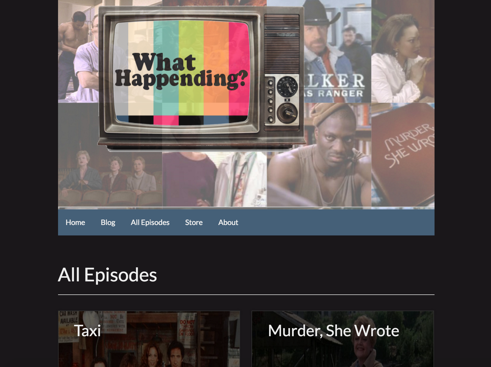
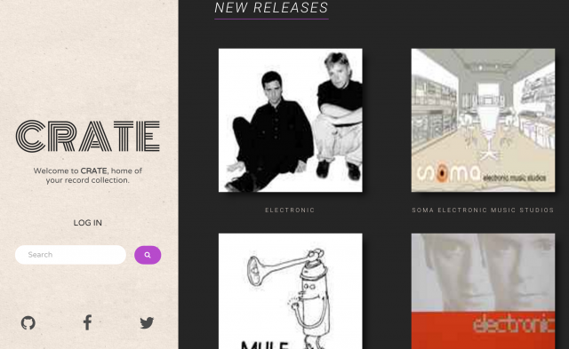

Projects
WhatHappending Podcast
WhatHappending is a podcast where Jon and Blake watch the pilot episode and the series finale episode of a show they have not previously seen. This site was built using Drupal 7 and served as the final project of the Drupal course at Epicodus
CRATE
CRATE is a web application for collecting and organizing your personal record collection. Technologies used include: Discogs API, PHP, Apache, Silex, and Twig
Created by Yvonna Contreras